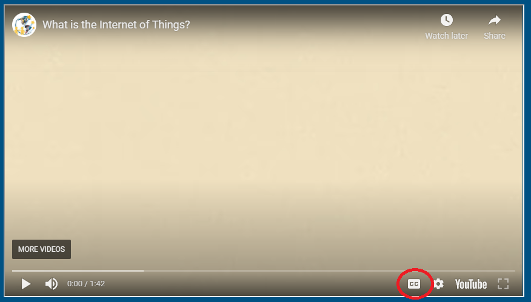

How to turn on captions for YouTube videos
Press the red play button in the middle of the video's thumbnail. When the video starts playing, click the little box with "cc" written in it. This is located in the bottom right corner of the screen, to the left of the gear symbol.
